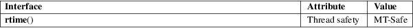

rtime − get time from a remote machine
Standard C library (libc, −lc)
#include <rpc/auth_des.h>
int
rtime(struct sockaddr_in *addrp, struct
rpc_timeval *timep,
struct rpc_timeval *timeout);
This function uses the Time Server Protocol as described in RFC 868 to obtain the time from a remote machine.
The Time Server Protocol gives the time in seconds since 00:00:00 UTC, 1 Jan 1900, and this function subtracts the appropriate constant in order to convert the result to seconds since the Epoch, 1970-01-01 00:00:00 +0000 (UTC).
When timeout is non-NULL, the udp/time socket (port 37) is used. Otherwise, the tcp/time socket (port 37) is used.
On success, 0 is returned, and the obtained 32-bit time value is stored in timep−>tv_sec. In case of error −1 is returned, and errno is set to indicate the error.
All errors for underlying functions (sendto(2), poll(2), recvfrom(2), connect(2), read(2)) can occur. Moreover:
|
EIO |
The number of returned bytes is not 4. |
ETIMEDOUT
The waiting time as defined in timeout has expired.
For an explanation of the terms used in this section, see attributes(7).

Only IPv4 is supported.
Some in.timed versions support only TCP. Try the example program with use_tcp set to 1.
rtime() in glibc 2.2.5 and earlier does not work properly on 64-bit machines.
This example requires that port 37 is up and open. You may check that the time entry within /etc/inetd.conf is not commented out.
The program connects to a computer called "linux". Using "localhost" does not work. The result is the localtime of the computer "linux".
#include
<errno.h>
#include <netdb.h>
#include <stdio.h>
#include <stdlib.h>
#include <string.h>
#include <time.h>
#include <rpc/auth_des.h>
static int
use_tcp = 0;
static const char servername[] = "linux";
int
main(void)
{
int ret;
time_t t;
struct hostent *hent;
struct rpc_timeval time1 = {0, 0};
struct rpc_timeval timeout = {1, 0};
struct sockaddr_in name;
memset(&name,
0, sizeof(name));
sethostent(1);
hent = gethostbyname(servername);
memcpy(&name.sin_addr, hent−>h_addr,
hent−>h_length);
ret =
rtime(&name, &time1, use_tcp ? NULL : &timeout);
if (ret < 0)
perror("rtime error");
else {
t = time1.tv_sec;
printf("%s\n", ctime(&t));
}
exit(EXIT_SUCCESS);
}
ntpdate(1), inetd(8)